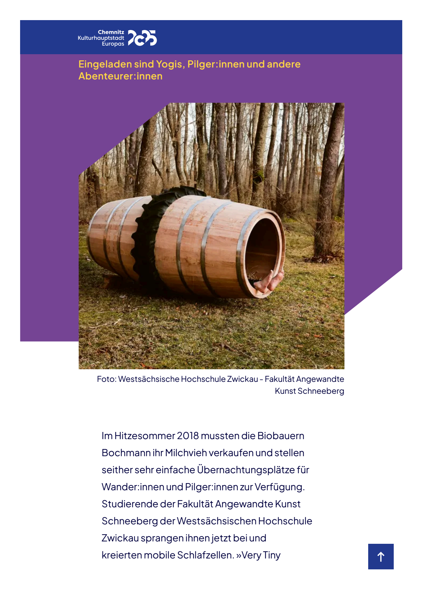
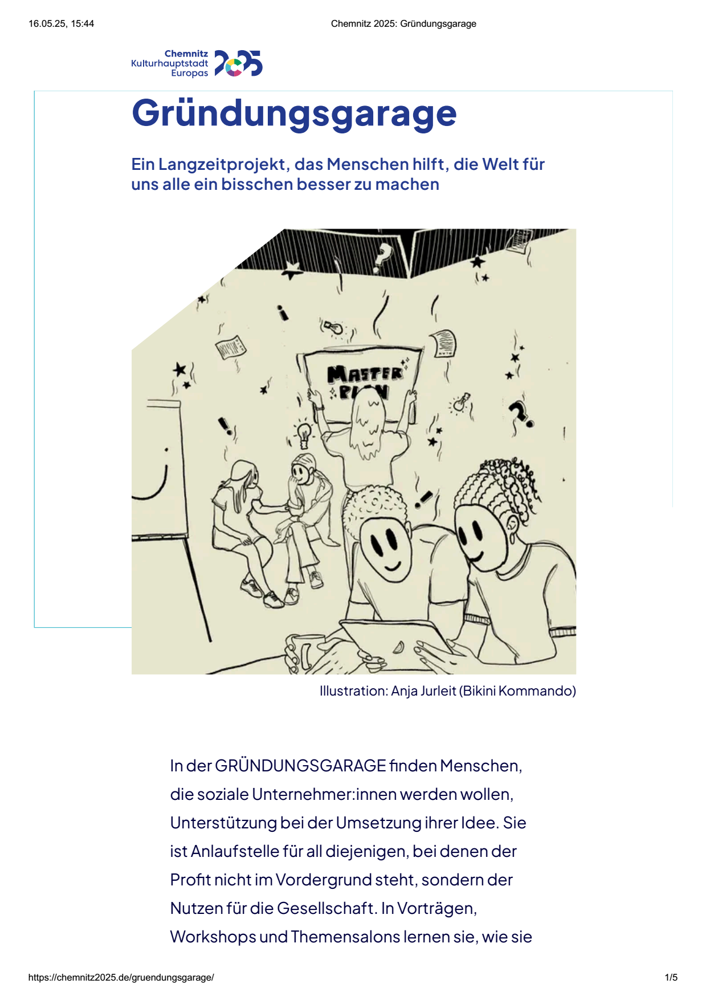
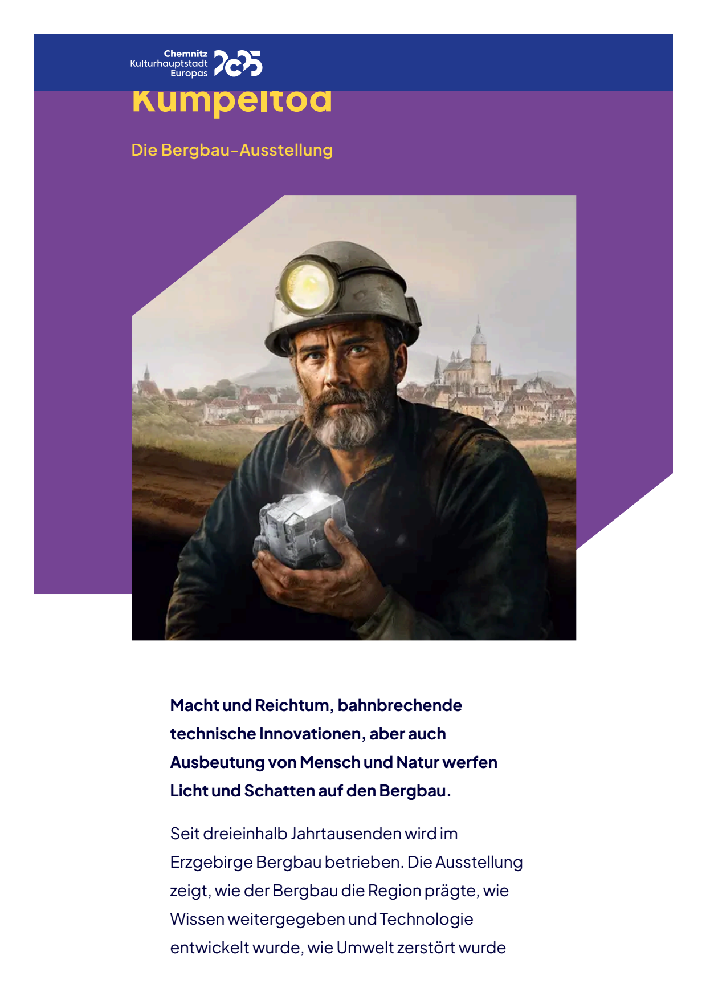

http://faulnusz.github.io/magazin/ArcheOrwell/BessereHaelfte.Chemnitz2025.html
http://www.posthoernchenklackern.de | Das E >> Magazin nach dem Motto: »fake news as fake news.« | Werbung und Bewerbungen und Vorarbeiten der Firma: Chercheling - Beratung zu Nebenprodukten in Produktionsverwandtschaften | Joachim Schneider | Leipartstraße 12 | 81369 München | posthoernlein@e.mail.de
Chemnitzer Getränkemärkte wollen sonst keine der neuen ungesüßten Faßmalzbiere beitragen : Wirt von Riesenfaß-Übernachtungen grüßt die Werbezeitung Posthörnchen aus München mit einem Schlichtungsprojekt ! Der Faßwiesenwirt bietet allen Angezapften des nachbarbelagerten Publizisten eine Übernachtung im Kinderficker-Flächendecken-Faß im Stehen unter liegenden Fäßern ringsum an und verlangt von ihnen jeweils zwei eigene Artikel, einen zu einer aktuell ermittelten »fake news« über deren eigenen verdächtigen Mißbrauch durch deren eigene Brüder oder Eltern oder Lehrer usw. und einen zu irgendeinem Mißbrauch in deren Geschäft, zur Einreichung bei Posthörnchen und zur lebenslangen Nachbesserung aber nur auf seine ausdrückliche Anfrage. Zum Winter werden alle teilnehmenden Fäßer zu einer Faßhütte für den Winter zusammengezimmert (Faßreihen verwandet mit Faßvierteln und diese vernagelt mit Faßachteln, ein Holzofen-Kamin aus drei Fäßern übereinander und ein Segeltuch-Kegel-Dach daran ), die man Posthörnchen zum Parkplatzmieten-Preis überlassen will ! Das Riesenfaßwiesen-Frühstücksmobil verkauft auch tragbare Elektromotor-Akku-Packs mit Steckdosen für Kofferrechner, Lampen etc. ! Buchenhainer und Wolfratshausener Förster loben »Pilot-Projekt« als besser denn die Ast-Lauben dort ! Quastenbommeltaschenklopferwirbel 195.28.2025 (14. Juli) | Nußzweig 274.40.2025 (1. Oktober)fake news as fake news.Die Bessere Hälfte der Welt
Chemnitz 2025: Werbeagenten-WG mit öffentlichem Belegte-Brote & Bier - Laden im EG und getrennten Stockwerken für Männchen und Weibchen in Chemnitzer Altbau ernährt sich längst vollständig aus Gewächshäusern und möchte für befristete Gästezimmer-Mitbewohner eine Druckausgabe der Werbezeitung Posthörnchen auslegen ! Nußgrube 267.39.2025 (24. September) | Nußzweig 274.40.2025 (1. Oktober)fake news as fake news.Die Bessere Hälfte der Welt.
2025: Chemnitzer Klärwerke schreiben Forschung an neuartigen Gas-Scheide-Ventilen aus, die mit Trenngas-Batterien etwa mit Flüßigstickstoff zur Ausfrierung von Sauerstoff und Stickstoff arbeiten oder mit Katalysatoren, die den brennbaren Schwefel und auch den Stickstoff zu zusätzlichem Methan verbinden, oder Sauerstoff und Stickstoff irgendwie ausscheiden können ! Chemnitzer Klärwerke verkaufen inzwischen schon Scheiße-Trockner und -Wärmespeicher auf Haushalts-Basis ! Zum Selbstkostenpreis für jeweils ca. 100 € bieten die Chemnitzer Klärwerke wärmespeichernde schwere gußeiserne blumenkastenhalblange Scheißesammler-Speicherkisten an mit angehängtem und abschließbar-gesockeltem Dachdeckel in Wabenquerschnittform und mit hühnereierpackungsartigen herausnehmbaren Trockenstöcken an Drahtseilchen durch Bohrlöcher in getrennten Seitenfächern diagonal von der unteren Außenkante zur oberen Wandkante und durch eingeschraubte Giebelspitzenösen auf dem Deckel im Spaltabstand zur schnelleren Trocknung aus dem Fenster und Befestigung an der Heizung unterm Fenster oder verschloßen als Wärmespeicher im Winter unters Bett oder zur Aufhängung und mit Keilsockeln auch zur Stapelung an der Wand ! In den Seitenfächern erzeugen eine Gas-Schleusen-Kabine Vakuumventil für Handluftpumpe (auch mit Pleuelkurbel) und Gas-Scheide-Ventile für Vakuum-Kartuschen und Gasart-und-Luftdruck-Sensor-Armaturen ! Ventileinheitliche Vakuum-Flaschen und -Patronen und -Kartuschen von 10 € bis 35 € für Vakuum-Handluftpumpe (auch mit Pleuelkurbel) zu 28 € ! Und für ca. 250 € ebenfalls wärmespeichernde kupferne Kloschüßeln mit Schleusendeckel-Sitz und bauähnlicher Gas-Schleusen-Kabine als Scheiße-Trockner, Wärmespeicher und Methangas-Sammler ! Chemnitzer Klempner bieten dazu Feuerkamin-Thermen für Scheißekohlen bei allen Wasserheizungs-Systemen sowie ab Werk alle Gasthermen mit Gasflaschenanschluß und grüßen die Werbezeitung Posthörnchen mit einem neuen Faltkörper-Heizungstopf ! Nußgrube 267.39.2025 (24. September) | Nußzweig 274.40.2025 (1. Oktober)fake news as fake news.Die Bessere Hälfte der Welt.
2025: Chemnitzer Automechaniker-Unternehmen »Chauffeur Garage« repariert nur noch Wägen aus *Car-Sharing*, die er dafür auch selber pachtet ! Chemnitzer Automechaniker kauft für alle Mitarbeiter die neuen Methangas-Motor-Generator-Vans von BMW mit schnell ausbaubaren Sitzen und pachtet die von Mitarbeitern, um sie mit Carsharing-Software »Chauffeur« von Werbezeitung Posthörnchen auszustatten ! Arbeitsverträge von Mitarbeitern werden umgestellt auf Werkstatt-Pacht abzüglich Wagen-Pacht gegen Gewinn-Kassen-Beteiligung, was man auch aber nicht nur Taxi-Fahrern und Möbelpackern anbietet, die ebenfalls für Taxi- oder Kurier-Fahrten einheitlich den doppelten Buchungspreis der Eigennutzung verlangen sollen ! Chemnitzer IT-Firma will dafür Software »Chauffeur« bauen und beteiligt Posthörnchen an Planung und Gewinn !Nußgrube 267.39.2025 (24. September) | Nußzweig 274.40.2025 (1. Oktober)fake news as fake news.Die Bessere Hälfte der Welt.
Fassung vom 274.40.2025 (1. Oktober)